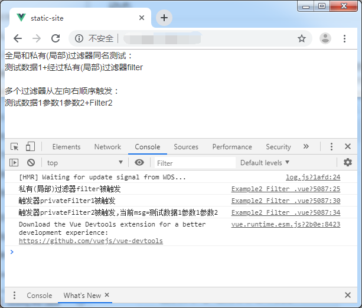

全局过滤器定义位置在 main.js 中
如果全局过滤器和私有(局部)过滤器同名，则仅会经过和触发私有(局部)过滤器，不会经过和触发全局过滤器
局部过滤器仅在当前组件中有效，在父子组件中相互都无效
使用多个过滤器会从左向右顺序触发
基于vue-cli的示例：
main.js
import Vue from 'vue'
import App from './App.vue'
//全局过滤器，需写在new Vue之前，不可写在其他.vue文件中，因为 Vue 在局部无法获得取值会是 undefind
Vue.filter('filter',function(msg){
window.console.log("全局过滤器filter被触发");
return msg+"+经过全局过滤器filter";
});
new Vue({
render: h => h(App)
}).$mount('#app')App.vue 父组件
<template> <div> <Example></Example> </div> </template>
export default {
name: 'app',
filters:{//私有(局部)过滤器仅当前组件有效,定义在父组件中的过滤器在子组件中无效
appfilter:function(msg){
window.console.log("私有(局部)过滤器Appfilter被触发");
return msg+"+经过私有(局部)过滤器Appfilter"
},
},
}
</script>Example.vue 子组件
<template>
<div>
<!-- <br>{{msg|appfilter}}<br> 如果使用会报错，定义在父组件的过滤器appfilter是无效的 -->
<!-- 全局和私有(局部)同名，则仅会经过和触发私有(局部)过滤器，全局过滤器无效 -->
全局和私有(局部)过滤器同名测试：<br>{{msg|filter}}<br>
<br>
多个过滤器从左向右顺序触发：<br>
{{msg|privateFilter1('参数1','参数2')|privateFilter2}}
</div>
</template><script>
//关于 Vue 实例中的 this: 在Vue实例中，要获取 data 中的数据 或者 methods 中的方法，必须使用 this. 访问，这里的 this 表示 Vue 实例对象
export default {
data(){//注意：使用 vue cli 后，这里是属于组件 data 必须这么写，和实例 data 不一样，实例可以是对象
return{
msg:"测试数据1",
}
},
filters:{//私有(局部)过滤器仅当前组件有效
//私有(局部)过滤器，如和全局过滤器同名，则私有(局部)覆盖全局，全局过滤器失效
filter:function(msg){
window.console.log("私有(局部)过滤器filter被触发");
return msg+"+经过私有(局部)过滤器filter"
},
//过滤器顺序测试
privateFilter1:function(msg,arg1,arg2){
window.console.log("触发器privateFilter1被触发");
return msg+arg1+arg2;
},
privateFilter2:function(msg){
window.console.log("触发器privateFilter2被触发,当前msg="+msg);
return msg+"+Filter2";
}
},
};
</script>本例中的实际测试结果：
